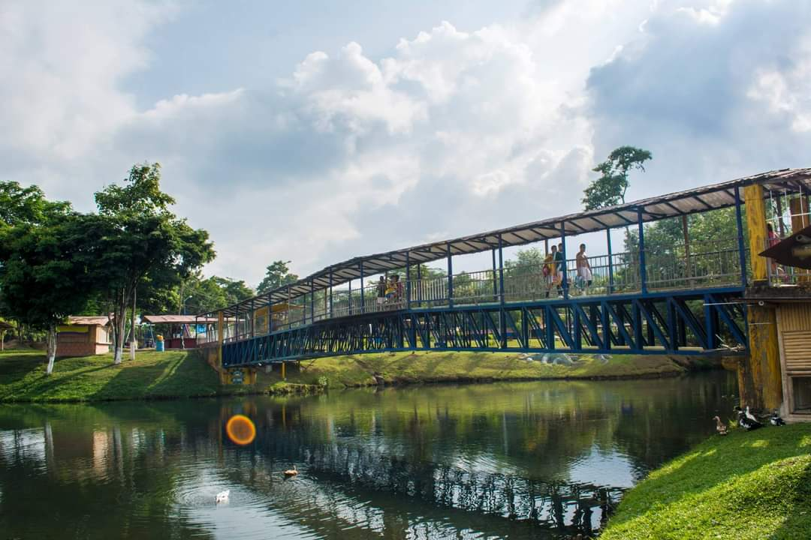

Paraísos Acuáticos

Lago De La Pradera
El Lago de La Pradera es un lago artificial en Dosquebradas, Colombia, que se ha convertido en un popular espacio de recreación y esparcimiento.


Termales de Santa Rosa
Los Termales Santa Rosa de Cabal son un destino turístico en Risaralda, Colombia, famoso por sus aguas termales naturales. El complejo está formado por el Termales Hotel y el Termales Balneario.